102-confirmation-0-short-scrolled__dark__fr-FR__display2__96dpi.png
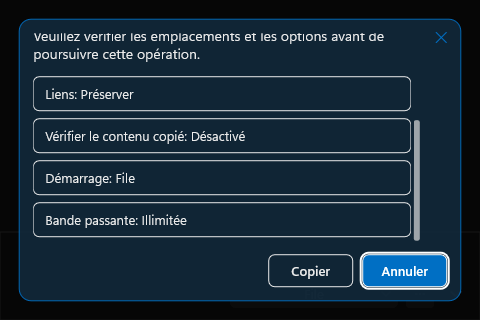
11-speed-limited__dark__480dip__fr-FR__display1__144dpi.png
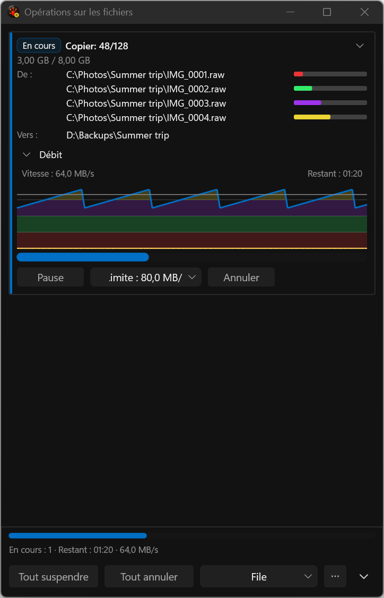
11-speed-limited__dark__480dip__fr-FR__display2__96dpi.png
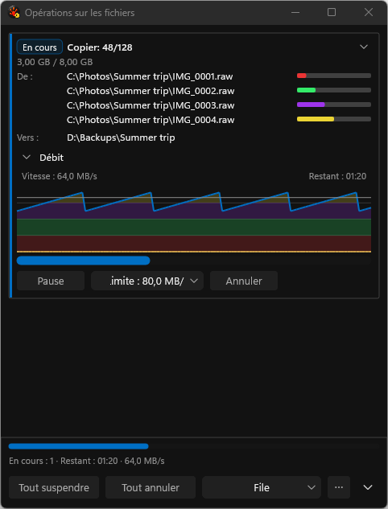
117-expanded-wrapped-summary__dark__480dip__fr-FR__display1__144dpi.png
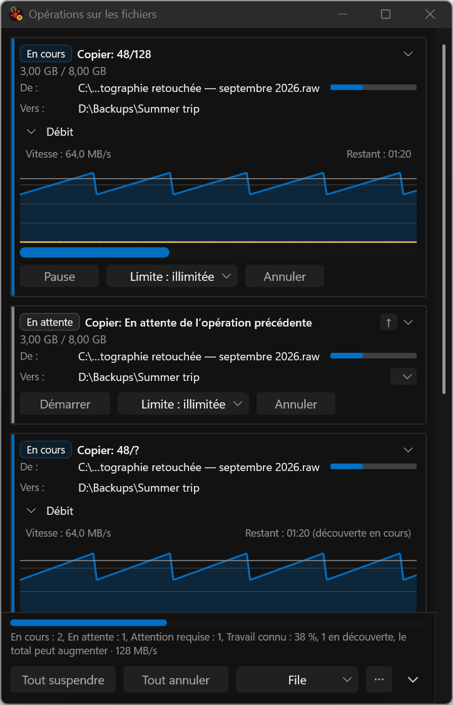
117-expanded-wrapped-summary__dark__480dip__fr-FR__display2__96dpi.png
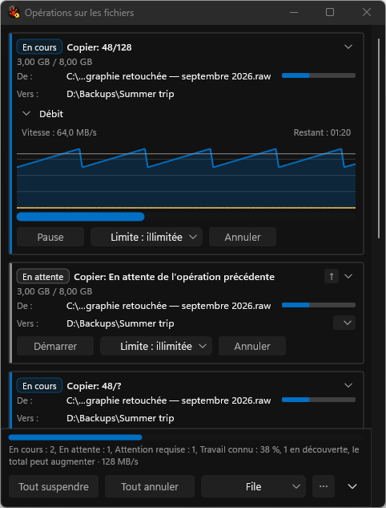
131-issues-history-evicted__dark__fr-FR__display1__144dpi.png
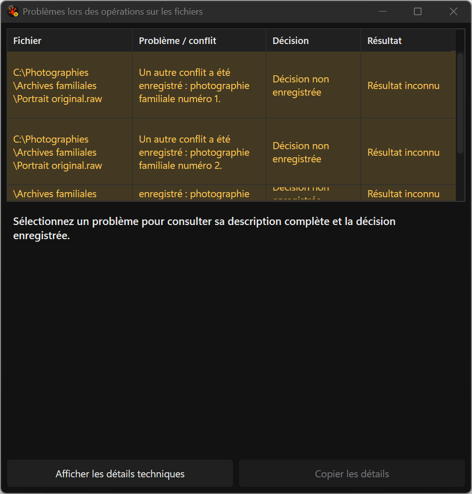
131-issues-history-evicted__dark__fr-FR__display2__96dpi.png
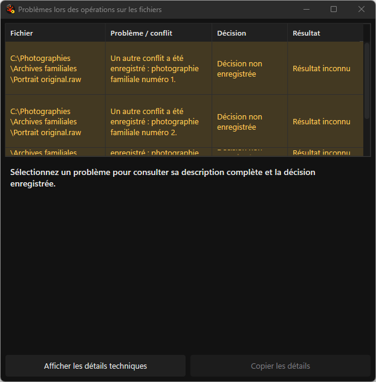
132-issues-history-reintroduced__dark__fr-FR__display1__144dpi.png
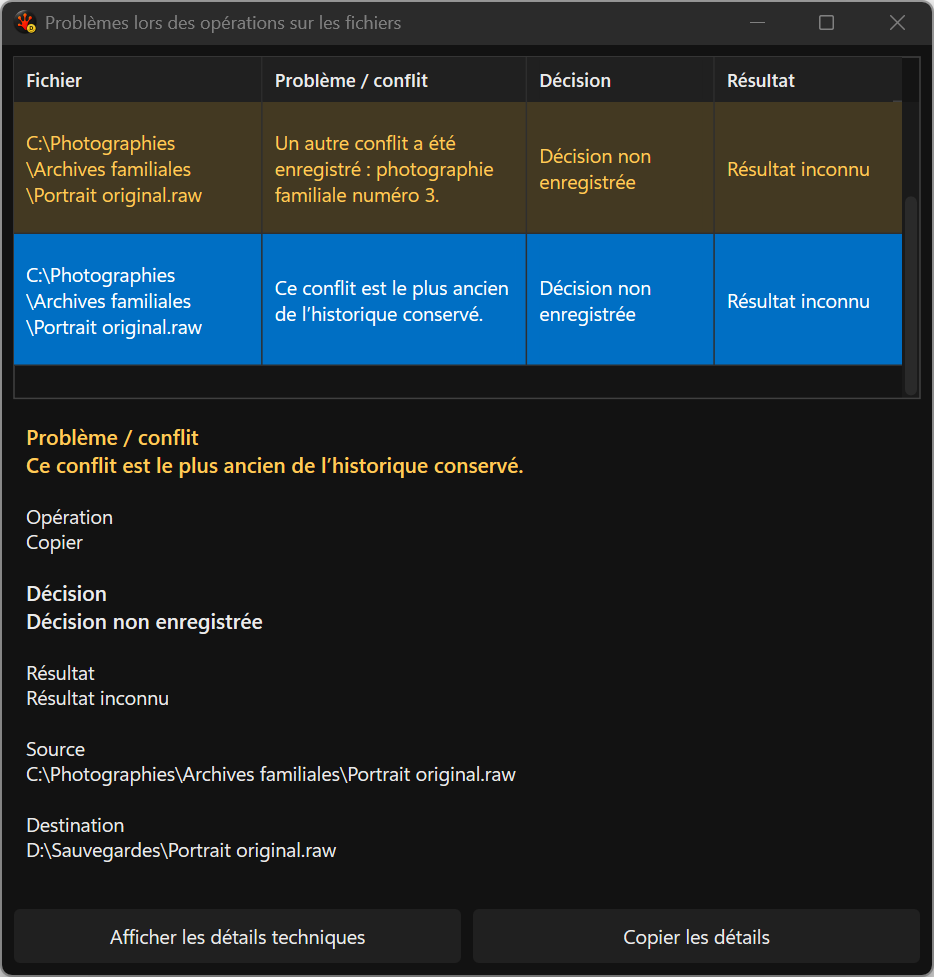
132-issues-history-reintroduced__dark__fr-FR__display2__96dpi.png
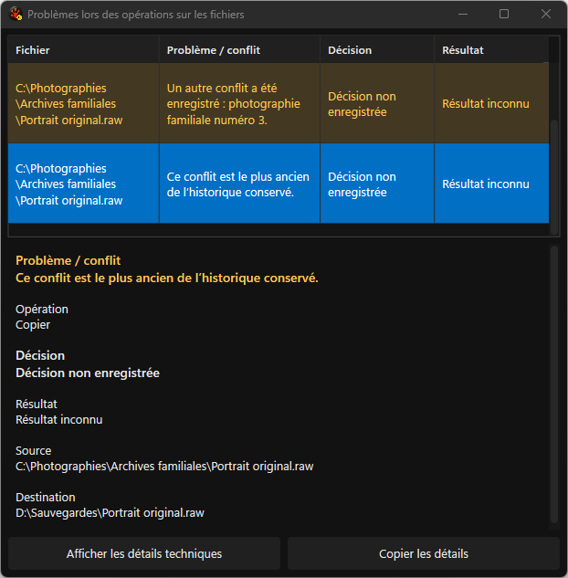
33-decision-file-exists__dark__480dip__fr-FR__display1__144dpi.png
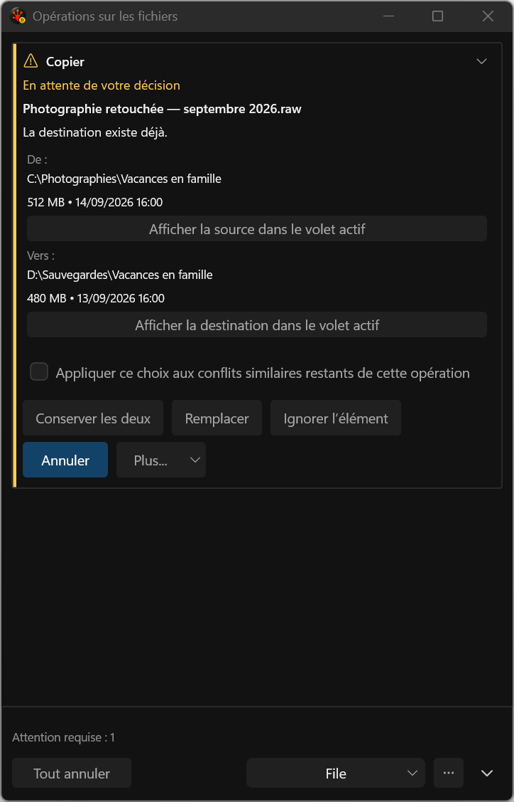
33-decision-file-exists__dark__480dip__fr-FR__display2__96dpi.png
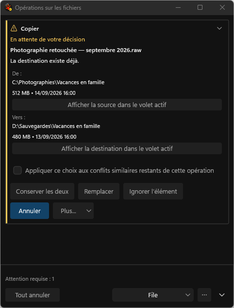